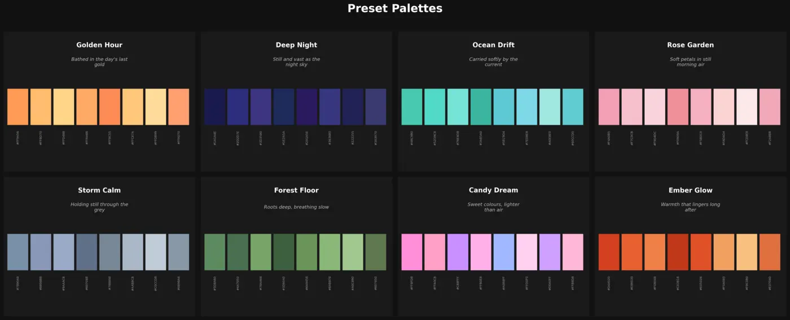

Wellness Lamp
A mobile-controlled lamp with mood-based color palettes and synchronized ESP32 nodes.

Problem
A small lighting device needs a usable control interface and reliable state sharing across nodes.
Work
- Built React Native screens for color, brightness, themes and sound.
- Implemented palette selection from mood inputs and BLE device control.
- Developed ESP32 firmware that synchronizes multiple nodes over ESP-NOW.
Result
- Published the application and firmware source.
- Built an end-to-end path from app interaction to coordinated lamp output.